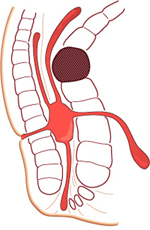
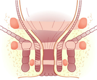
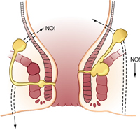

ANORECTAL ABSCESS
DEFINITION
The pathology of abscess and fistula are the same, abscess
representing the acute phase and fistula
the chronic sequelae.
- 25-50% associated with fistula depending on what you read.
top D I A B M
I M home
INCIDENCE
Common.
All ages, incl. infants / children
- most common ~20-50yrs.
Men > Women for ischiorectal.
Risk Factors
Diabetes, Crohn's, Immunocompromise.
top D I A B M
I M home
AETIOLOGY
Cryptoglandular Infection
Most (90%) arise from a blocked anal gland.
- these are the mucus secreting glands in the columns of Morgagni at
the dentate line.
This subsequently becomes infected.
- 60% grow E.coli
- 23% grow S.aureus.
- Few are pure bacteroides, strep, proteus strains.
- Many are mixed.
Hence broad spectrum antibiotics required
Other causes include perforation at this point, eg fish-bone,
blood-borne infection, Crohn's, thrombosed external pile when
haematoma is not drained.
top D I A B M
I M home
BIOLOGICAL BEHAVIOUR
Classification
- Refer Netters plates 364-.
There are four anatomical types depending on the course of spread
from an infected anorectal gland:

Picture note: bowel lumen is to the left, sphincters are block
outlines.
i) perianal (60%)
Spreads superficially to lie in the region of the subcut portion of
the external sphincter.
The pus can expand the tissues fairly easily here - pain and
systemic features less.
ii) ischiorectal (30%)
Extend laterally into the deeper ischioanal fossa.
- the fat here is vulnerable as the blood supply is poor.
- thus it is not long before the whole space is involved.
- eventually will 'horseshoe' around rectum to involve whole
posterior part of anal canal and contralateral ischioanal fossa.
- may extend above the levator ani muscles ('pelvi-rectal' or 'supralevator'):
iii) intersphincteric
Tracking between the sphincters either up or down.
iv) submucosal
Internal to the internal sphincter, above the dentate line, beside
the anal glands.
May occur after injection of haemorrhoid tissue
- usually esolves spontaneously.
v) supralevator
Pus tracks vertically upwards
- deep and difficult to diagnose.
Pathophysiology
May discharge spontaneously to skin
If communication to skin is established, a fistula-in-ano may result.
- this occurs in ~25% of patients.
Complications
May horse-shoe around circumferentially from one side to the other.
- via the intersphincteric space, supralevator space or ischiorectal
fossa:

top D I A B M
I M home
MANIFESTATIONS
Symptoms
Local
Pain
Gradual onset, increasing severity over days.
Throbbing & constant.
Worse with defecation.
Associated tender swelling.
May vary from local pain and tenderness (perianal) to a deep
seated rectal pain with no local tenderness (ischiorectal)
Systemic
Often found in cases where abscess is ischiorectal or deeper.
May be severe; temp to 39 is not uncommon.
Signs
Observe
Localised inflammation.
An acutely tender, rounded, cystic, cherry-sized lump may be seen at
the anal verge.
Seen below the dentate line.
Ensure no fasciitis or cellulitis.
Palpate
Induration.
- large, tender and brawny if ischiorectal type.
May be fluctuant.
PR
Usually painful and not contributory.
Perform if no external evidence
- may show an intersphincteric or supralevator abscess.
Don't do a sigmoidoscopy or anoscopy.
Beware the immunocompromised
Pain without other features may occur.
Localised abscess formation will not occur in pronounced
leukopaenia.
EUA may ne required, ensure culture performed.
Intersphincteric Abscesses
Severe throbbing pain like a fissure.
Should be suspected if pain does not settle after treatment of a
coexisting fissure.
Key Point
Perianal and ischiorectal abscesses often present as characteristic
fluctuant masses.
Intershpincteric or suprelevator abscesses may have few findings,
except tenderness on DRE.
Differential
May be confused with a pilonidal, Bartholin's gland or Cowper's
gland, hidradenitis, crohn's etc.
top D I A B M
I M home
INVESTIGATIONS
Bloods
Do a FBC, CRP and look for elevated glucose if suspected.
Imaging
Pelvic CT or MRI helps direct surgical draining in non-obvious
cases.
Important for identifying occult abscesses (supralevator, deep
ischiorectal, intersphincterics).
Especially in the morbidly obese.
top D I A B M
I M home
MANAGEMENT
Antibiotics?
No. Cannot reach the contents of the abscess in enough
concentration.
- not to be relied upon alone
Are not required in routine
drainage of a perianal abscess
- Class II, Grade A evidence (Practice Parameters)
Do consider, however, when cellulitis / fasciitis / high risk pt /
immunosuppressed / cardiac prophylaxis / diabetes / complex
comorbidities.
- obtain a culture in such situations.
Operative
Incise and drain
- optimal preservation of underlying sphincters is essential.
- make a radial incision over area of greatest induration.
- if uncertain where, needle aspiration will help plan site.
- as close to anus as possible in case subsequent fistulotomy is
required
- allow drainage of whole cavity
- remove necrotic tissue lining walls with a finger wrapped in
gauze.
- consider biopsy of the wall if needed.
- insert kaldistat packing to the mouth only to achieve haemostasis
(removed by pt in bath the next day).
- inserting a drain for three days post-op is not usually necessary.
- packing is generally unnecessary and painful.
- several days of frequent soaks and sitz baths to help to irrigate
the cavity.
Ischiorectals
- often helps to use a needle to localize the abscess if necessary.
- incise as above
- explore the cavity, gently breaking down septae.
- remove necrotic tissue lining walls with a finger wrapped in
gauze.
- biopsy the wall and send the pus for culture if necessary.
- don't be over-enthusiastic with probes so as to go through the
levator.
- perform sigmoidoscopy to examine rectal mucosa (exclude Crohn's).
Intersphincterics
Drain into the rectal cavity
Incise the internal sphincter directly over the cavity to release
pus
Supralevator & intermuscular
Drain depending on sepsis tract to develop least-complex fistula.

But the patient is not responding?
- consider immunocompromise, residual infection / inadequate
drainage and recurrent abscesses.
My patient has a big horseshoe
abscess.
- crypt of origin may be located in the posterior midline.
- surgically conservative approach is a good idea.
- provide counter-drainage + consider inserting drain bilaterally if
large horse-shoe
- consider small posterior midline incision from subcut ext
sphincter over abscess to tip of coccyx
- pass hemostats gently into the posterior midline, draining seton
around the posterior sphincter.
--> thus unroofing the post-anal space and its ischioanal
extension.
--> can deal with the horseshoe fistula later.
top D I A B M
I M home
References
Cameron 10th
Sabistons 17th.
Am Society of Colon & Rectal Surgeons. Practice
Parameters. Dis Col Rect 2005;48:1337-42.